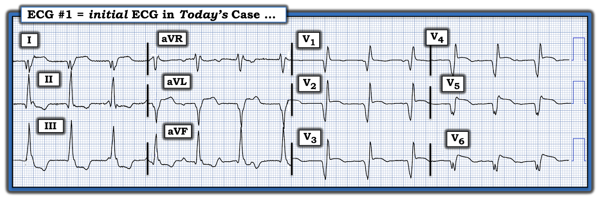
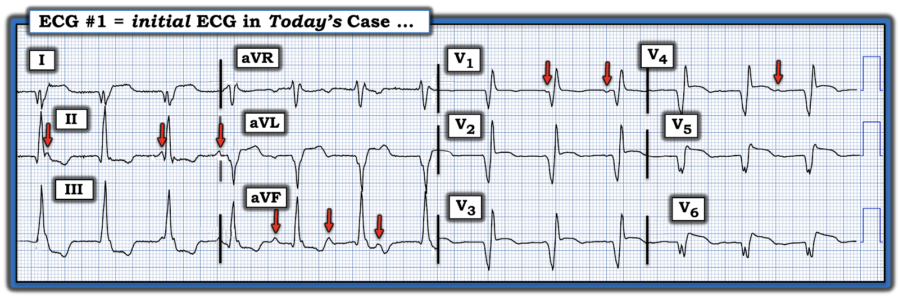
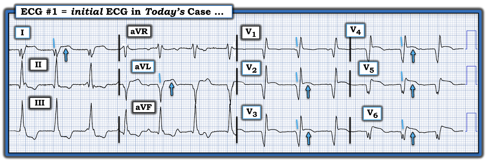
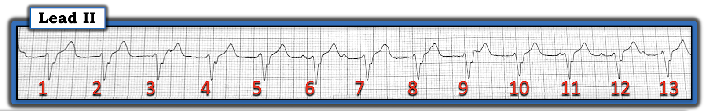
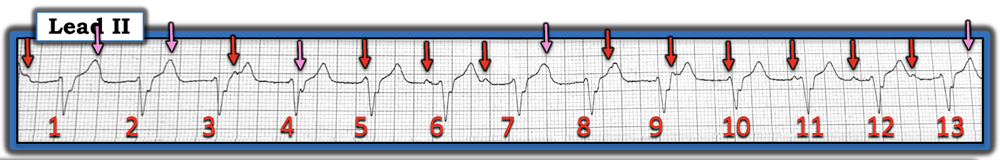
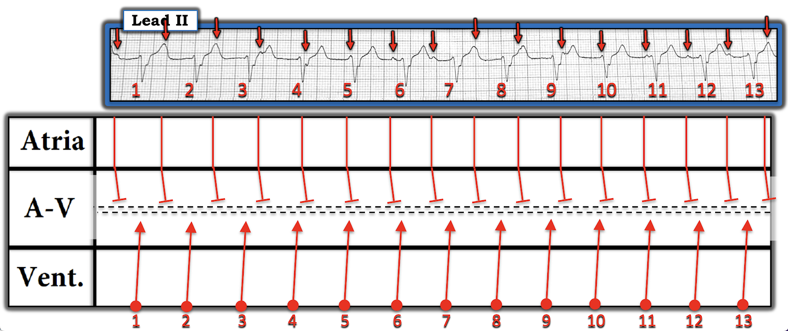
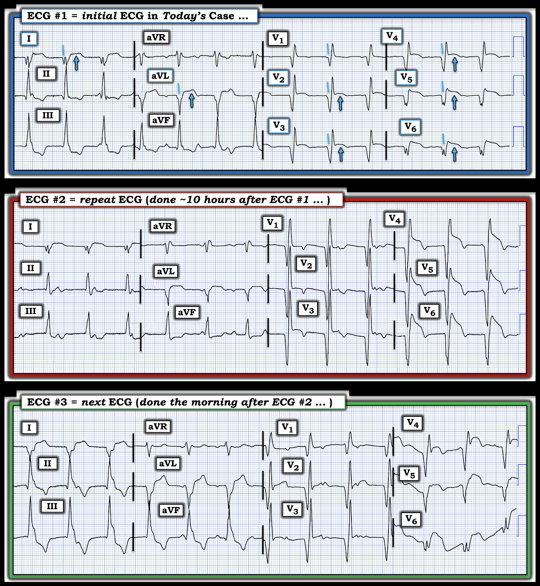

ECG Blog #470 — Điện tâm đồ này kể một câu chuyện
Điện tâm đồ ở Hình-1 được ghi từ một người đàn ông trung niên trước đó khỏe mạnh — đến khoa cấp cứu (Emergency Department — ED) vì mới khởi phát đau ngực (CP — Chest Pain) bắt đầu ~1 giờ trước.
CÂU HỎI:
Tiêu đề tôi chọn cho bài Blog hôm nay là “Điện tâm đồ này kể một câu chuyện”.
- “Câu chuyện” mà điện tâm đồ ban đầu này kể là gì?


SUY NGHĨ CỦA TÔI về CA BỆNH hôm nay:
Đáng tiếc là không có dải nhịp chuyển đạo dài ở Hình-1. Dù vậy — có vẻ đây là một nhịp QRS rộng, đều, tần số ~80/phút.
- Có vẻ có một vài sóng P — nhưng chúng dường như không liên quan với các phức bộ QRS kế cận, vì khoảng PR liên tục thay đổi (các mũi tên ĐỎ ở Hình-2). Điều này gợi ý có phân ly nhĩ thất (AV dissociation) — mà nếu thực sự có, sẽ gợi ý nguyên nhân từ thất của nhịp QRS rộng này.


Bằng chứng ủng hộ nhịp nền ở Hình-2 là nhịp thất — đến từ việc đánh giá hình dạng QRS (xem Hình-3). Các đặc điểm hình dạng sau đây không phù hợp với bất kỳ dạng rối loạn dẫn truyền nào đã biết:
- Phức bộ QRS phân mảnh nhưng âm hoàn toàn ở chuyển đạo I.
- Các sóng Q rộng và sâu thấy ở mỗi chuyển đạo trong 6 chuyển đạo ngực.
- Khử cực ban đầu chậm ở mỗi chuyển đạo ngực (tức là sườn xuống của hầu như mọi sóng Q và phức bộ QS đều “chậm” và thoai thoải — trong khi khử cực phần đầu của QRS thường nhanh hơn ở các nhịp trên thất đi qua hệ thống dẫn truyền chuyên biệt).
- QRS chủ yếu âm và phân mảnh ở chuyển đạo V6 (Phức bộ QRS ở chuyển đạo bên trái V6 gần như luôn dương nhiều hơn so với ở đây khi nhịp là nhịp trên thất).
- ĐIỂM THEN CHỐT (PEARL) #1: Không chỉ đơn thuần gợi ý nguyên nhân từ thất của nhịp ở Hình-3 — các sóng Q (hoặc phức bộ QS) rộng và sâu ở 8/12 chuyển đạo (các đường nghiêng màu xanh) — nhất là khi có phân mảnh mà ta thấy ở một số chuyển đạo (đặc biệt ở I,V5,V6) — gợi ý mạnh mẽ "sẹo" mà nhiều khả năng nhất là do nhồi máu cũ.
ĐIỂM THEN CHỐT (PEARL) #2:
Dù việc đánh giá thiếu máu cục bộ và/hoặc nhồi máu nền trên một nhịp thất là một thách thức — vẫn có những thay đổi ST-T nguyên phát thấy ở Hình-3 gợi ý một biến cố cấp đang diễn ra.
- Đáng chú ý nhất trong các thay đổi ST-T “nguyên phát” này ở điện tâm đồ #1 — gồm ST chênh lên dạng vòm (coving) bắt đầu từ chuyển đạo V2 — và tiếp tục qua các chuyển đạo trước tim cho tới chuyển đạo V6. Lưu ý — ST chênh lên dạng vòm này lớn nhất ở các chuyển đạo ngực bên V5 và V6 (các mũi tên XANH ở Hình-3).
- Xin nhấn mạnh: Hình dạng và mức độ ST chênh lên ở các chuyển đạo ngực rõ rệt đến mức — chỉ rõ một biến cố cấp gần đây (và có thể đang diễn ra) cho đến khi chứng minh được điều ngược lại.
- ST chênh lên bất thường cũng thấy ở các chuyển đạo chi bên cao ( = chuyển đạo I và aVL) — điều này cùng với các sóng Q và phức bộ QS bất thường (và rất lớn) ở 8/12 chuyển đạo — gợi ý rằng nguyên nhân của nhịp thất này là một STEMI trước-bên diện rộng gần đây và/hoặc đang diễn ra.


================================
CA BỆNH TIẾP DIỄN:
- Troponin dương tính. Điều này ủng hộ nhận định có nhồi máu cấp đang diễn ra.
- Đã ghi dải nhịp chuyển đạo II dài như ở Hình-4.
CÂU HỎI:
- Nhịp ở Hình-4 là gì?
- Có phải ta đang thấy nhịp tự thất gia tốc (AIVR — Accelerated IdioVentricular Rhythm) — thường xuất hiện dưới dạng một nhịp thất ngắn ngủi và thường lành tính, có thể báo hiệu tái tưới máu ở bệnh nhân nhồi máu cấp? (Xem ECG Blog #321 và ECG Blog #108 — để biết thêm về AIVR).


TRẢ LỜI:
Một điều dễ bỏ sót khi đánh giá dải nhịp ở Hình-4 của ca hôm nay — là mặc dù phức bộ QRS trong dải nhịp chuyển đạo II dài này rộng — hình dạng QRS lại rất khác so với hình dạng QRS đã thấy trước đó ở chuyển đạo II (Hãy quay lại so sánh hình dạng QRS dương trước đây ở chuyển đạo II của Hình-3 — với QRS nay chủ yếu âm ở Hình-4).
- Sự thay đổi hình dạng QRS mà ta thấy ở chuyển đạo II — gợi ý rằng vị trí của nhịp thất ta đang xem ở Hình-4 đã thay đổi so với trước. Điều này có thể xảy ra, và trong ca hôm nay — không được coi là thể hiện sự thay đổi của nhịp chung đang diễn ra, vì mối liên hệ thay đổi liên tục giữa sóng P và các phức bộ QRS kế cận trong vài giờ tiếp theo (và hóa ra là cả những ngày sau đó) trên theo dõi từ xa (telemetry) vẫn như cũ.
- Trong suốt khoảng thời gian này — bệnh nhân vẫn ổn định huyết động và đáng ngạc nhiên là không có triệu chứng!
- Bệnh nhân từ chối thông tim. Thay vào đó — ông cảm thấy khỏe, và cuối cùng quyết định về nhà vài ngày sau. Bệnh nhân rời viện trước khi kịp ghi điện tâm đồ cuối cùng — nên chúng ta không biết nhịp tim lúc bệnh nhân ra viện là gì.
Vậy thì nhịp ở Hình-4 là gì?
Tôi thấy cách dễ nhất để đánh giá những nhịp như ở Hình-4 — là đánh dấu các sóng P. Làm vậy giúp đánh giá mối liên hệ (nếu có) giữa sóng P với các phức bộ QRS kế cận. Tôi đã đánh dấu các sóng P ở Hình-5.
- Các mũi tên ĐỎ ở Hình-5 chỉ những sóng P mà ta có thể nhận ra dễ dàng.
- Các mũi tên HỒNG chỉ những chỗ mà compa đo (calipers) của tôi gợi ý có sóng P đúng lúc có lẽ đang ẩn (với chỗ nhọn tinh tế hoặc "phồng thêm" ở một số sóng T, qua đó ủng hộ nghi ngờ của tôi rằng có sóng P xoang đúng lúc bên dưới các mũi tên này).
- Lưu ý rằng khoảng PR trước 13 phức bộ QRS ở Hình-5 liên tục thay đổi. Như vậy ta có một nhịp QRS rộng (nhịp thất) khá đều ở ~80-85/phút — và một nhịp xoang nền độc lập, khá đều, nhưng không có mối liên hệ nào giữa các sóng P xoang đúng lúc với các phức bộ QRS kế cận (tức là có phân ly nhĩ thất hoàn toàn ).
- Về mặt kỹ thuật — chẩn đoán blốc AV hoàn toàn (độ 3) là khó khi không có nhịp thoát thất dưới ~50-55/phút (vì khó chứng minh được ở tần số thất trên 55-60/phút rằng mọi sóng P đều có đủ cơ hội để dẫn truyền — mà vẫn không dẫn truyền được). Dù vậy — bệnh nhân hôm nay duy trì cùng một nhịp này theo thời gian — nên nhịp này được cho là blốc AV độ 3.
- ĐIỂM THEN CHỐT (PEARL) #3: Một điểm khác ủng hộ nhịp này là blốc AV hoàn toàn — là nhịp nhĩ nhanh hơn nhịp thất. Trong hoàn cảnh bình thường — điều này lẽ ra cho phép các sóng P xoang đến nhanh hơn vào một lúc nào đó giành lại quyền kiểm soát nhịp NẾU không có blốc AV hoàn toàn. Thay vào đó, không sóng P xoang nào dẫn truyền được xuống thất.


Giản đồ bậc thang (laddergram) của Hình-5:
Khác với AIVR, trong đó có một nhịp thất gia tốc kèm hoặc không có sóng P hoặc có sóng P ngược dòng — nhịp ở Hình-5 có vẻ là blốc AV hoàn toàn.
- Tôi thể hiện điều này trong giản đồ bậc thang ở Hình-6. Tầng Nhĩ cho thấy các sóng P xoang khá đều (loạn nhịp xoang theo pha thất (ventriculophasic) nhẹ) — và một nhịp "thoát" thất gia tốc khá đều — nhưng không có sóng P xoang đúng lúc nào dẫn truyền được xuống thất do blốc AV hoàn toàn (các đường chấm đôi ở Tầng Nút AV mô tả rào cản ngăn không cho bất kỳ xung động xoang nào dẫn truyền xuống thất).


================================
KẾT LUẬN CA BỆNH: Câu chuyện được kể trong ca hôm nay ...
Ghép lại "câu chuyện" của ca hôm nay:
- Ở Hình-7 — là 2 điện tâm đồ 12 chuyển đạo bổ sung được ghi trong quá trình nằm viện của bệnh nhân này. Dù khó đánh giá nhịp trên 2 bản ghi này khi không có dải nhịp chuyển đạo dài đi kèm — dường như vẫn có các sóng P từng lúc với khoảng PR thay đổi trên cả hai bản ghi, gợi ý cùng nhịp mà ta đã thấy ở Hình-6 vẫn tồn tại.
- Nếu ta xem lại các điện tâm đồ liên tiếp trong ca hôm nay (mà tôi đã ghép lại ở Hình-7) — có sự tiến triển rõ ràng của một STEMI trước-bên diện rộng (tức là ST chênh lên tăng, đặc biệt ở các chuyển đạo V4,V5,V6 trên điện tâm đồ #2 — sau đó ST chênh lên giảm kèm sóng T đảo ngược rõ hơn, đặc biệt ở các chuyển đạo dưới của điện tâm đồ #3).
- ĐIỂM THEN CHỐT (PEARL) #4: Vì vậy ca hôm nay là một ví dụ tuyệt vời cho thấy các thay đổi hình dạng ST-T liên tiếp ở các nhát thất đôi khi có thể giúp nhận ra các thay đổi tiến triển của nhồi máu cấp. ST chênh lên giảm kèm sóng T đảo ngược sâu hơn ở điện tâm đồ #3 gợi ý đã có một mức độ tái tưới máu nhất định.
ĐIỂM THEN CHỐT (PEARL) #5:
Việc phân biệt giữa AIVR liên quan nhồi máu (thường là một nhịp thất thoáng qua và lành tính, hay xảy ra kèm nhồi máu cơ tim cấp) — với — sự xuất hiện blốc AV hoàn toàn (như đã xảy ra trong ca hôm nay) — có ý nghĩa lâm sàng quan trọng:
- Trong đa số trường hợp — không cần điều trị AIVR.
- Ngược lại — có thể cần tạo nhịp cấp cứu (và/hoặc lâu dài) khi blốc AV hoàn toàn là hậu quả của nhồi máu cấp. Điều này đặc biệt đúng khi blốc AV xuất hiện do một STEMI thành trước diện rộng, như ca hôm nay (khác với blốc AV xảy ra kèm nhồi máu cơ tim thành dưới cấp, vốn nhiều khả năng thoáng qua hơn nhiều — và ít khả năng cần tạo nhịp hơn nhiều).
Xử trí tối ưu
cho CA BỆNH hôm nay
— vì vậy sẽ bao gồm thông tim sớm kèm can thiệp mạch vành qua da (PCI), đây là cơ hội tốt nhất để giải quyết blốc độ 3.
- Nếu blốc AV độ 3 vẫn tồn tại dù đã PCI (nhất là khi kèm mất ổn định huyết động) — thì sẽ cần tạo nhịp cấp cứu, ít nhất là tạm thời (tức là các khuyến cáo đề nghị không cấy máy tạo nhịp vĩnh viễn trong ít nhất vài ngày sau PCI — phòng trường hợp dẫn truyền AV tự hồi phục).
- Dù đã nói như trên — bệnh nhân hôm nay lại có ý khác. Ông vẫn ổn định một cách đáng kinh ngạc bất chấp rối loạn dẫn truyền nói trên. Cuối cùng ông quyết định rời viện vào một thời điểm nào đó sau điện tâm đồ #3, và sau đó mất theo dõi.
- Vậy thì "Câu chuyện" là gì? — "Câu chuyện" mà tôi nhanh chóng suy ra khi nhìn thấy điện tâm đồ ban đầu của ca hôm nay — là nhịp QRS rộng đều ở Hình-1, với phân ly nhĩ thất rõ ràng — thể hiện blốc AV hoàn toàn, nhiều khả năng nhất là hậu quả của STEMI trước-bên diện rộng gần đây (và/hoặc đang diễn ra).


================================
Các kết cục Cuối cùng có thể xảy ra: Bệnh nhân hôm nay đã hết triệu chứng một cách đáng kinh ngạc sau khoảng một ngày nằm viện. Ông từ chối thông tim và PCI — và — vì cảm thấy khỏe, đã quyết định về nhà.
- Rõ ràng từ các điện tâm đồ liên tiếp ở Hình-7 — là một lượng cơ tim đáng kể đã mất do nhồi máu diện rộng. Dù vậy, bất chấp blốc AV hoàn toàn — tần số thất bình thường (~80/phút) do nhịp "thoát" thất gia tốc của bệnh nhân này tạo ra dường như vẫn duy trì đủ cung lượng tim để giúp ông "không triệu chứng".
- Trong Kịch bản tốt nhất — blốc AV độ 3 của bệnh nhân sẽ tự hết. Khi đó, dù mất chức năng đáng kể do nhồi máu diện rộng — ông vẫn có thể duy trì đủ hoạt động hằng ngày chấp nhận được với lối sống của mình. Chúng tôi mong kết cục theo kịch bản tốt nhất này!
- Trong một Kịch bản kém thuận lợi hơn — blốc AV độ 3 của bệnh nhân không chỉ có thể trở thành vĩnh viễn, mà nhịp "thoát" thất có lẽ cũng sẽ chậm lại vào một lúc nào đó tới tần số thoát tự thất thông thường 20-40/phút. Trong kịch bản kém thuận lợi hơn này — hy vọng bệnh nhân sẽ sống đủ lâu để quay lại đặt máy tạo nhịp vĩnh viễn.
==================================
Lời cảm ơn: Xin cảm ơn Fardeen Baray a (đến từ Kabul, Afghanistan) đã chia sẻ ca bệnh và bản ghi này.
- Đặc biệt CẢM ƠN bác sĩ Willy Frick — vì những nhận định tim mạch học của ông về ca này.
==================================
Để có Thêm Tài liệu — về đọc điện tâm đồ trong OMI (không thỏa tiêu chuẩn STEMI dựa trên milimét).

- Trong "My ECG Podcasts" — Hãy xem ECG Podcast #2 (ECG Errors that Lead to Missing Acute Coronary Occlusion — Những lỗi đọc điện tâm đồ dẫn đến bỏ sót tắc mạch vành cấp).
- Trong 'My ECG Videos" — Hãy xem gần đầu trang đó các VIDEO từ các bài nói chuyện MedAll ECG Talks của tôi, ôn lại chẩn đoán nhồi máu cơ tim cấp bằng điện tâm đồ — và cách nhận ra OMI cấp khi không đạt tiêu chuẩn STEMI (được ôn lại trong ECG Blog #406 — Blog #407 — Blog #408).
- Xin LƯU Ý — Với mỗi video trong 6 video MedAll ở đầu trang My ECG Videos, NẾU bạn bấm vào "More" trong phần mô tả, bạn sẽ có một Mục lục có liên kết cho phép nhảy tới phần bàn luận về từng điểm cụ thể (tức là ở phút 5:29 trong video 22 phút của Blog #406 — bạn có thể nhảy tới "You CAN recognize OMI without STEMI findings!" (Bạn CÓ THỂ nhận ra OMI mà không cần dấu hiệu STEMI!) ).
==========================
- Để biết thêm về AIVR — xem ECG Blog #108 — và ECG Blog #321 —